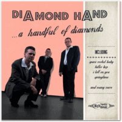

Diamond Hand - ... A Handful Of Diamonds (Album, 2011)
01 - Space Rocket Baby (3:39)
02 - I Tell On You (2:46)
03 - Honey Bee (2:48)
04 - Carrie (2:49)
05 - Why Don't You Go (2:31)
06 - Music That's Hot (2:32)
07 - Killer Bop (2:36)
08 - Voodoo Doll (3:00)
09 - Leavin' On My Mind (2:19)
10 - Jitterbop Judie (2:54)
11 - She's A Hot Hot (2:14)
12 - Springtime (3:23)
13 - Good Ol' Stuff (1:58)
14 - Space Rocket Baby (alt.) (3:29)
© Diamond Hand :: [self-released]
Notes
Review
055/366 (Project 366)
Amazing charm of the Diamond Hand album. You just want to listen to it and feel enjoy! Only, fully, totally! Vocals and voice is so suitable as for rockin' and rollin' but for the smoothest country themes too ("Springime", "Carrie"). However not so country how country singers usually do.
But if you got out from this dreamy swirl - then you start to understand how beauty this thing, how cool this point, how pretty this touch, how authentic this tune, how catchy this tone and more more more. Wonderful! One mood and you find out it as a fabulous! Then mood gonna be another one and you find out it as a marvelous! Perhaps, this is a magic. Magic that called "Rockabilly". Stress free, soft as taste of excellent!
Voice of vocalist is so tuny. With these songs - so harmonious. Really pleasure to hear this sound and such tones.
Palpitating story "I Tell On You" with a bit adventure feelings despite it is clear lyrics of.. hmmm.. just further adventure and bitterness of previous one.
"Music That Is Hot" - well, what is music that hot?! It is authentic, it is bop... it is authentic rockabilly bop! Well, with spice of rockin' roll, of course!
"Space Rocket Baby" with an amazing introduction. Intro itself, rhythm starting and rockin' roll. Then so much smooth vocal appears! Wonderful voice. Gurgling, galloping, chopping. Drummin' and backing vocals are chic. Outro alternative version is not less beauty. Just rocket flight!
"Carrie" sounds quiet, calm, relaxed, in the evening mood, without overload.
Surely I have to take a weekend for such kind of beautiful realease.